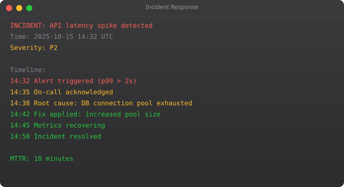

Kubernetes has become the standard platform for running containerised applications in production. Understanding Kubernetes is not optional for DevOps engineers working with cloud-native systems. This part covers the core concepts and practical skills you need to deploy and manage applications on Kubernetes.
# Pod: smallest deployable unit (one or more containers)
# Deployment: manages Pod replicas and rolling updates
# Service: stable network endpoint for Pods
# ConfigMap: non-secret configuration data
# Secret: sensitive data (passwords, API keys)
# Ingress: HTTP/HTTPS routing from outside cluster
# Namespace: virtual cluster for resource isolation# deployment.yaml
apiVersion: apps/v1
kind: Deployment
metadata:
name: myapp
namespace: production
spec:
replicas: 3
selector:
matchLabels:
app: myapp
template:
metadata:
labels:
app: myapp
spec:
containers:
- name: myapp
image: myrepo/myapp:v1.2.0
ports:
- containerPort: 8000
resources:
requests:
memory: "128Mi"
cpu: "250m"
limits:
memory: "256Mi"
cpu: "500m"
env:
- name: DB_PASSWORD
valueFrom:
secretKeyRef:
name: myapp-secrets
key: db-password
livenessProbe:
httpGet:
path: /health
port: 8000
initialDelaySeconds: 30
periodSeconds: 10# service.yaml
apiVersion: v1
kind: Service
metadata:
name: myapp-svc
spec:
selector:
app: myapp
ports:
- port: 80
targetPort: 8000
# ingress.yaml
apiVersion: networking.k8s.io/v1
kind: Ingress
metadata:
name: myapp-ingress
annotations:
nginx.ingress.kubernetes.io/ssl-redirect: "true"
spec:
rules:
- host: myapp.example.com
http:
paths:
- path: /
pathType: Prefix
backend:
service:
name: myapp-svc
port:
number: 80kubectl get pods # List pods
kubectl get pods -n production # In namespace
kubectl describe pod myapp-abc123 # Detailed info
kubectl logs myapp-abc123 --tail=100 -f # Live logs
kubectl exec -it myapp-abc123 -- bash # Shell into pod
kubectl rollout status deployment/myapp # Deployment status
kubectl rollout undo deployment/myapp # Rollback
kubectl scale deployment myapp --replicas=5 # Scale
kubectl apply -f deployment.yaml # Apply config
kubectl delete -f deployment.yaml # Delete resourcesA Pod is a single running instance. A Deployment manages multiple Pod replicas, handles rolling updates, and restarts failed Pods. Always use Deployments (or StatefulSets, DaemonSets) in production -- never bare Pods.
A Service provides a stable network endpoint (IP + DNS name) for a set of Pods. Since Pods are ephemeral with changing IPs, Services provide a stable address. ClusterIP for internal, NodePort for external access, LoadBalancer for cloud load balancers.
requests tells the scheduler the minimum resources needed -- used for placement. limits sets the maximum -- container is killed if it exceeds memory limit. Always set both to ensure predictable scheduling and prevent noisy neighbour problems.
A periodic health check that Kubernetes runs against your container. If it fails, Kubernetes restarts the container. The readinessProbe determines when a container is ready to receive traffic. Both are essential for production reliability.
Helm is the package manager for Kubernetes. A Helm chart is a package of Kubernetes YAML files with configurable variables. helm install nginx bitnami/nginx deploys nginx with a single command. Helm handles upgrades and rollbacks of complex multi-resource applications.
In Part 11, we cover cloud platforms for DevOps -- AWS, GCP, and Azure services every DevOps engineer needs to know.
← Back to Blog# NetworkPolicy: restrict pod-to-pod communication
apiVersion: networking.k8s.io/v1
kind: NetworkPolicy
metadata:
name: allow-only-app
spec:
podSelector:
matchLabels:
app: database
policyTypes:
- Ingress
ingress:
- from:
- podSelector:
matchLabels:
app: myapp # Only myapp pods can reach database
ports:
- protocol: TCP
port: 5432apiVersion: autoscaling/v2
kind: HorizontalPodAutoscaler
metadata:
name: myapp-hpa
spec:
scaleTargetRef:
apiVersion: apps/v1
kind: Deployment
name: myapp
minReplicas: 2
maxReplicas: 20
metrics:
- type: Resource
resource:
name: cpu
target:
type: Utilization
averageUtilization: 60 # Scale out when avg CPU > 60%
- type: Resource
resource:
name: memory
target:
type: Utilization
averageUtilization: 80# Pod not starting:
kubectl describe pod myapp-abc123 # Look at Events section
kubectl get events --sort-by=.lastTimestamp
# Container crash-looping:
kubectl logs myapp-abc123 --previous # Logs from crashed container
kubectl logs myapp-abc123 -f # Live logs
# Shell into running pod
kubectl exec -it myapp-abc123 -- bash
kubectl exec -it myapp-abc123 -- sh # If no bash
# Debug with ephemeral container (no shell in prod image)
kubectl debug -it myapp-abc123 --image=ubuntu --target=myappapiVersion: apps/v1
kind: StatefulSet
metadata:
name: postgres
spec:
serviceName: postgres
replicas: 1
selector:
matchLabels:
app: postgres
template:
spec:
containers:
- name: postgres
image: postgres:15
env:
- name: POSTGRES_PASSWORD
valueFrom:
secretKeyRef:
name: postgres-secret
key: password
volumeMounts:
- name: data
mountPath: /var/lib/postgresql/data
volumeClaimTemplates:
- metadata:
name: data
spec:
accessModes: [ReadWriteOnce]
resources:
requests:
storage: 20Gi# Operators extend Kubernetes with domain knowledge
# They automate operational tasks that humans would do manually
# Examples of popular Operators:
# - Prometheus Operator: manages Prometheus and Alertmanager config
# - cert-manager: automatically provisions and renews SSL certificates
# - External Secrets Operator: syncs secrets from AWS SM / Vault to K8s
# - PostgreSQL Operator (Zalando): manages PostgreSQL clusters
# Install cert-manager (manages SSL certs automatically)
kubectl apply -f https://github.com/cert-manager/cert-manager/releases/latest/download/cert-manager.yaml
# After installing, create a ClusterIssuer for Let's Encrypt
apiVersion: cert-manager.io/v1
kind: ClusterIssuer
metadata:
name: letsencrypt-prod
spec:
acme:
server: https://acme-v02.api.letsencrypt.org/directory
email: suraj@srjahir.in
privateKeySecretRef:
name: letsencrypt-prod
solvers:
- http01:
ingress:
class: nginx# Allow a developer to view pods but not modify them
apiVersion: rbac.authorization.k8s.io/v1
kind: Role
metadata:
namespace: development
name: pod-reader
rules:
- apiGroups: [""]
resources: ["pods", "pods/log"]
verbs: ["get", "list", "watch"]
---
apiVersion: rbac.authorization.k8s.io/v1
kind: RoleBinding
metadata:
name: dev-pod-reader
namespace: development
subjects:
- kind: User
name: suraj@company.com
roleRef:
kind: Role
name: pod-reader
apiGroup: rbac.authorization.k8s.io